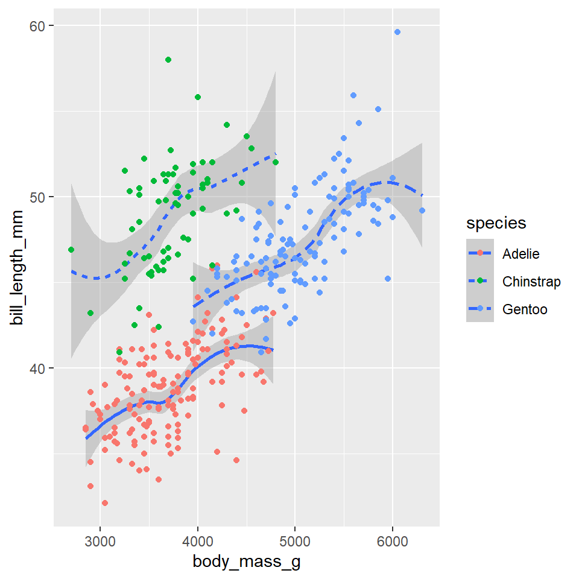
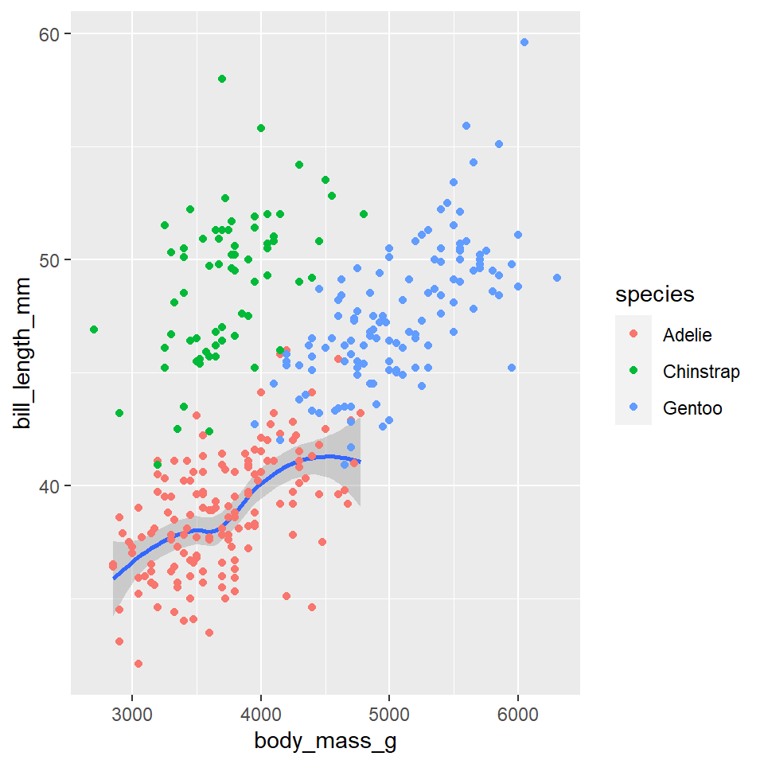
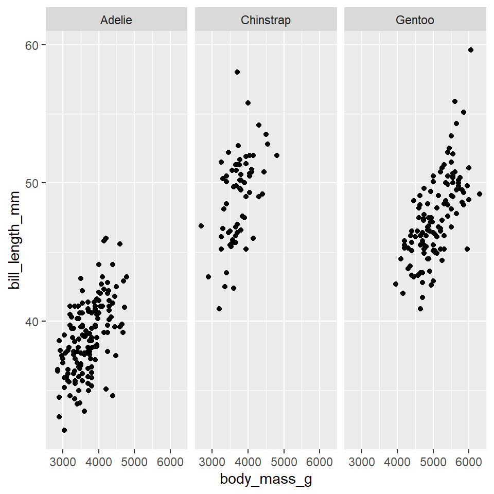
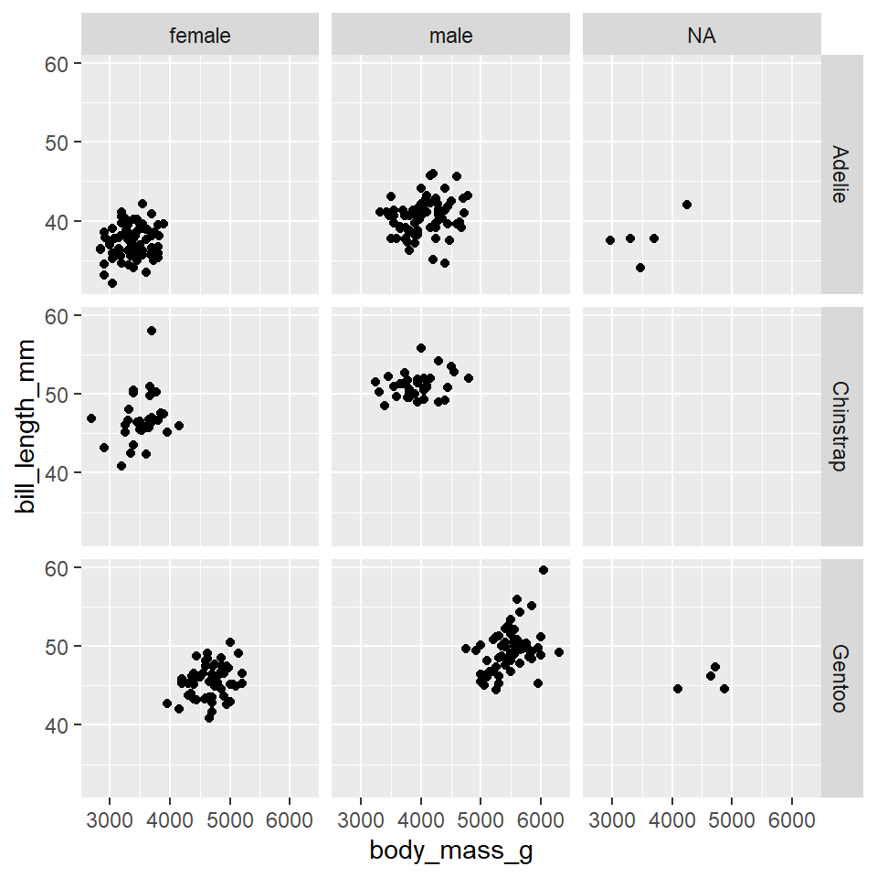
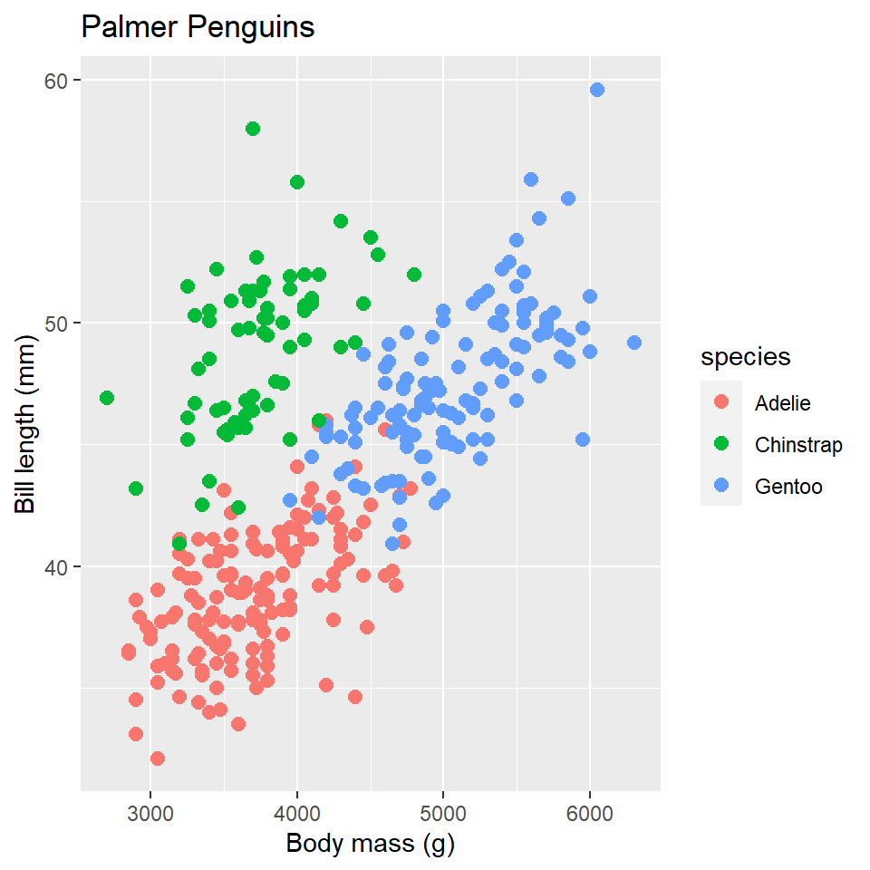
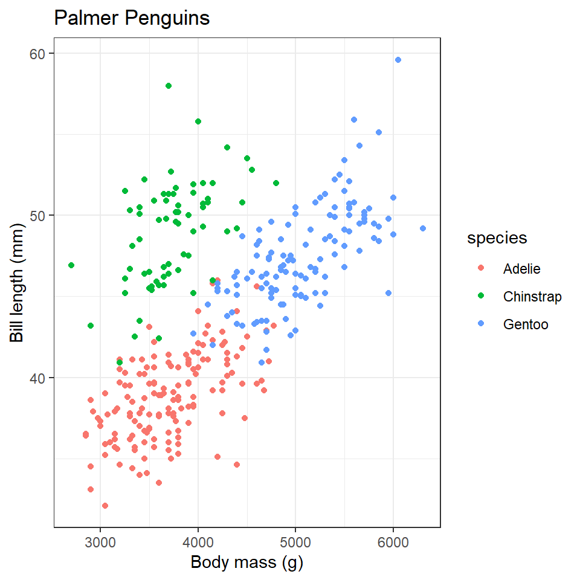

R is an extensible programming language, meaning you can write R code to extend the functionality of base R. To share that code, R users will often bundle it into a package, a collection of functions, data, and documentation. You can think of packages as apps, but apps specifically designed for R. To make the functionality a package offers available in R, you have to load them in with the library() function (the technical term is attach).
You should always, always, always load all the packages you use at the beginning of a document. That way, people who read your code know exactly what packages you are using all at once and right away. To make this really, really explicit, I prefer to set this off with its own section that I call the “R Preamble.” In a Quarto document, it looks like this:
## R Preamble```{r packages}#| warning: falselibrary(archdata)library(ggplot2)library(palmerpenguins)library(skimr)library(viridis)```
Of course, these aren’t just automatically on your computer, so you have to install the packages first. Then you can open them in R. To do that, you use the function install.packages(). For the packages used today, you can use this call just once like so:
Note that you only need to run this once, so don’t put this as a line in your Quarto document, which you might render multiple times. Just run it in the console.
Exercises
Open a new Quarto document and add the R Preamble with an R code chunk with the library() calls that load the R packages required for this lab.
Now actually run each library() call. You can do that by either highlighting them and hitting Ctrl + Enter (Cmd + Enter) or by clicking the green arrow that appears in the top right of the code chunk.
Let’s use R to describe some properties of a sample of penguins from Palmer Station in Antarctica. These data became available in R when you loaded the palmerpenguins package. They aren’t currently visible in your environment (for complicated reasons), but trust me, they’re there. The name of the dataset is penguins, so you can call it that way.
# A tibble: 5 × 8
species island bill_length_mm bill_depth_mm flipper_l…¹ body_…² sex year
<fct> <fct> <dbl> <dbl> <int> <int> <fct> <int>
1 Adelie Torgersen 39.1 18.7 181 3750 male 2007
2 Adelie Torgersen 39.5 17.4 186 3800 fema… 2007
3 Adelie Torgersen 40.3 18 195 3250 fema… 2007
4 Adelie Torgersen NA NA NA NA <NA> 2007
5 Adelie Torgersen 36.7 19.3 193 3450 fema… 2007
# … with abbreviated variable names ¹flipper_length_mm, ²body_mass_g
Central tendency
The central tendency is, as its name suggests, a value around which other values tend to cluster. There are two primary measures of central tendency: the mean and the median. As you may recall, the mean or average of a sample is simply the sum of a finite set of values, \(x_i\), divided by the number of values, \(n\).
\[\bar{x} = \frac{1}{n} \sum_{i=1}^{n} x_i\]
Remember that this is only an estimate of the central tendency of a population, \(\mu\)! In R, you can calculate the mean by hand if you like, but it’s probably easier to use the built-in R function, mean(). Let’s use this to calculate the mean bill length of penguins.
An important limitation of the mean is its sensitivity to outliers - you know, like rich people. If you calculate the mean household income in the United States, for example, the incomes of obscenely wealthy individuals like Jeff Bezos and Elon Musk will pull that measure up, thus painting a much rosier picture of the US than the reality the rest of us live in. When there are extreme outliers, it is often advisable to use the median because it is less sensitive to outliers as it is the “middle” number or value that evenly divides the sample in half.
By the way, did you notice the weird use of the dollar sign $? This is used to index data and pull out a specific element by its name. For example, when we run the code snippet penguins$bill_length_mm, we are asking R to pull the variable bill_length_mm from the penguins table and give us its values. One important implication of this sort of indexing is that we can assign the variable to its own object outside of the table, e.g.
bill_length<-penguins$bill_length_mm
You’ll actually learn more about this, in particular how to work with tabular data, in the next lab.
Dispersion
Dispersion describes the spread of data around its central tendency. Are the values tightly clustered around the central tendency or highly dispersed? Is there, in other words, a lot of variability? This is what dispersion seeks to characterize. As with the central tendency, it has two primary measures: variance and standard deviation. The variance of a sample is the mean squared error.
Whoa! That’s a really big number. Do penguins get that big? The answer, of course, is No. The number is large because variance is squared error, so this is in units of squared-grams, \(g^2\), not grams, \(g\). Why do we square it? Well, if you think about it, some of the errors will be negative and some will be positive (some penguins will be larger than average and some smaller), but on balance - on average - the sum of the errors will tend towards zero, which is not terribly informative of the spread of the data. Or, put that another way, what we want with a measure of dispersion is not just difference but distance from the mean, and distance is always positive. Squaring the errors is one way of ensuring that the values are positive (similar to taking the absolute value).
There is one small catch to squaring though. It makes it a really weird measure to think about - like, what is a square gram? Hard to say. That’s why it is common to take the square root of the variance, to get the measure back into units of the data. This value is known as the standard deviation, \(s\). You can calculate it with the sd() function.
That’s about 1.8 pounds (if you prefer Imperial units).
Table summaries
To generate summary statistics for all the variables in your data, base R provides a really nice summary() function that you can apply to a table like so:
species island bill_length_mm bill_depth_mm
Adelie :152 Biscoe :168 Min. :32.1 Min. :13.1
Chinstrap: 68 Dream :124 1st Qu.:39.2 1st Qu.:15.6
Gentoo :124 Torgersen: 52 Median :44.5 Median :17.3
Mean :43.9 Mean :17.1
3rd Qu.:48.5 3rd Qu.:18.7
Max. :59.6 Max. :21.5
NA's :2 NA's :2
flipper_length_mm body_mass_g sex year
Min. :172 Min. :2700 female:165 Min. :2007
1st Qu.:190 1st Qu.:3550 male :168 1st Qu.:2007
Median :197 Median :4050 NA's : 11 Median :2008
Mean :201 Mean :4202 Mean :2008
3rd Qu.:213 3rd Qu.:4750 3rd Qu.:2009
Max. :231 Max. :6300 Max. :2009
NA's :2 NA's :2
As you can see, this prints out summary statistics for the variables in your data. However, the printout is not easy to read and it provides a somewhat limited set of summary statistics. As an alternative, you might try the skim() function from the skimr package.
Note that I have applied css styling to this table output to make it more compact and fit on the screen. Yours will look slightly different.
skim(penguins)
Data summary
Name
penguins
Number of rows
344
Number of columns
8
_______________________
Column type frequency:
factor
3
numeric
5
________________________
Group variables
None
Variable type: factor
skim_variable
n_missing
complete_rate
ordered
n_unique
top_counts
species
0
1.00
FALSE
3
Ade: 152, Gen: 124, Chi: 68
island
0
1.00
FALSE
3
Bis: 168, Dre: 124, Tor: 52
sex
11
0.97
FALSE
2
mal: 168, fem: 165
Variable type: numeric
skim_variable
n_missing
complete_rate
mean
sd
p0
p25
p50
p75
p100
hist
bill_length_mm
2
0.99
43.9
5.46
32.1
39.2
44.5
48.5
59.6
▃▇▇▆▁
bill_depth_mm
2
0.99
17.1
1.97
13.1
15.6
17.3
18.7
21.5
▅▅▇▇▂
flipper_length_mm
2
0.99
200.9
14.06
172.0
190.0
197.0
213.0
231.0
▂▇▃▅▂
body_mass_g
2
0.99
4201.8
801.95
2700.0
3550.0
4050.0
4750.0
6300.0
▃▇▆▃▂
year
0
1.00
2008.0
0.82
2007.0
2007.0
2008.0
2009.0
2009.0
▇▁▇▁▇
As you can see, there are three major sections of this printout: (i) Data Summary, (ii) Factor variables, and (iii) Numeric variables. The Data Summary gives you an overview of your table, with counts of the number of rows and columns, as well as counts of the different types of variables (factor, numeric, etc). The section on factor variables gives you counts for each level of the factor (for example, counts of the different species of penguins), as well as information about missing data. Finally, the section on numeric variables gives you information on missing data, as well as measures of dispersion and central tendency, including the mean, median (p50), and standard deviation (sd), the range or minimum and maximum values (p0 and p100), and the inner quartiles (p25 and p75).1
1 You’ll learn more about quartiles and how to visualize distributions in the next lab.
Exercises
Have a look at the penguins data again. Use head() to preview the first 15 rows.
With the penguins data, calculate all of the following:
median body mass
mean bill depth
variance in bill depth
standard deviation in bill length
The Grammar of Graphics
It’s easy to imagine how you would go about with pen and paper drawing a bar chart of, say, the number of penguins in each species in the penguins dataset. But, what if you had to dictate the steps to make that graph to another person, one you can’t see or physically interact with? All you can do is use words to communicate the graphic you want. How would you do it? The challenge here is that you and your illustrator must share a coherent vocabulary for describing graphics. That way you can unambiguously communicate your intent. That’s essentially what the grammar of graphics is, a language with a set of rules (a grammar) for specifying each component of a graphic.
Now, if you squint just right, you can see that R has a sort of grammar built-in with the base graphics package. To visualize data, it provides the default plot() function, which you learned about in the last lab. This is a workhorse function in R that will give you a decent visualization of your data fast, with minimal effort. It does have its limitations though. For starters, the default settings are, shall we say, less than appealing. I mean, they’re fine if late-nineties styles are your thing, but less than satisfying if a more modern look is what you’re after.2 Second, taking fine-grained control over graphics generated with plot() can be quite frustrating, especially when you want to have a faceted figure (a figure with multiple plot panels).
2 But, you know, opinions, everyone has them, and there’s no accounting for taste.
That’s where the ggplot2 package comes in. It provides an elegant implementation of the grammar of graphics, one with more modern aesthetics and with a more standardized framework for fine-tuning figures, so that’s what we’ll be using here. From time to time, I’ll try to give you examples of how to do things with the plot() function, too, so you can speak sensibly to the die-hard holdouts, but we’re going to focus on learning ggplot.
Tip
There are several excellent sources of additional information on statistical graphics in R and statistical graphics in general that I would recommend.
The website for the ggplot2 package: https://ggplot2.tidyverse.org/. This has loads of articles and references that will answer just about any question you might have.
The R graph gallery website: https://r-graph-gallery.com/. This has straightforward examples of how to make all sorts of different plot visualizations, both with base R and ggplot.
Claus Wilke’s free, online book Fundamentals of Data Visualization, which provides high-level rules or guidelines for generating statistical graphics in a way that clearly communicates its meaning or intent and is visually appealing.
The free, online book ggplot2: Elegant Graphics for Data Analysis (3ed) by Hadley Wickham, Danielle Navarro, and Thomas Lin Pedersen. This is a more a deep dive into the grammar of graphics than a cookbook, but it also has lots of examples of making figures with ggplot2.
So, to continue our analogy above, we’re going to treat R like our illustrator, and ggplot2 is the language we are going to speak to R to visualize our data. So, how do we do that? Well, let’s start with the basics. Suppose we want to know if there’s some kind of relationship (an allometric relationship) among the Palmer Station penguins between their body mass and bill length. Here’s how we would visualize that.
ggplot(data =penguins)+geom_point( mapping =aes(x =body_mass_g, y =bill_length_mm))
Here, we have created what is known as a scatterplot, a representation of the raw data as points on a Cartesian grid. There are several things to note about the code used to generate this plot.
First, it begins with a call to the ggplot() function. This takes a data argument. In this case, we say that we want to make a plot to visualize the penguins data.
The next function call is geom_point(). This is a way of specifying the geometry we want to plot. Here we chose points, but we could have used another choice (lines, for example, or polygons).
Note that the geom_point() call takes a mapping argument. You use this to specify how variables in your data are mapped to properties of the graphic. Here, we chose to map the body_mass_g variable to the x-coordinates and the bill_length_mm variable to the y-coordinates. Importantly, we use the aes() function to supply an aesthetic to the mapping parameter. This is always the case.
The final thing to point out here is that we combined or connected these arguments using the plus-sign, +. You should read this literally as addition, as in “make this ggplot of the penguins data and add a point geometry to it.” Be aware that the use of the plus-sign in this way is unique to the ggplot2 package and won’t work with other graphical tools in R.
We can summarize these ideas with a simple template. All that is required to make a graph in R is to replace the elements in the bracketed sections with a dataset, a geometry function, and an aesthetic mapping.
One of the great things about ggplot, something that makes it stand out compared to alternative graphics engines in R, is that you can assign plots to a variable and call it in different places, or modify it as needed.
penguins_plot<-ggplot(data =penguins)+geom_point( mapping =aes(x =body_mass_g, y =bill_length_mm))penguins_plot
Exercises
Recreate the scatterplot above, but switch the axes. Put bill length on the x-axis and body mass on the y-axis.
Now create a scatterplot of bill length (on the y-axis) by bill depth (on the x-axis).
Aesthetics
In the plot above, we only specified the position of the points (the x- and y-coordinates) in the aesthetic mapping, but there are many aesthetics (see the figure below), and we can map the same or other variables to those.
Consider, for example, the fact that there are three penguin species in our dataset: Adelie, Gentoo, and Chinstrap. Do we think the relationship between body mass and bill length holds for all of them? Let’s add penguin species to our aesthetic mapping (specifically to the color parameter) and see what happens.
ggplot(data =penguins)+geom_point( mapping =aes(x =body_mass_g, y =bill_length_mm, color =species))
Notice that ggplot2 automatically assigns a unique color to each species and adds a legend to the right that explains each color. In this way, the color doesn’t just change the look of the figure. It conveys information about the data. Rather than mapping a variable in the data to a specific aesthetic, though, we can also define an aesthetic manually for the geometry as a whole. In this case, the aesthetics do not convey information about the data. They merely change the look of the figure. The key to doing this is to move the specification outside the aes(), but still inside the geom_point() function.
ggplot(data =penguins)+geom_point( mapping =aes(x =body_mass_g, y =bill_length_mm), shape =21, size =4, color ="darkred", fill ="darkgoldenrod1")
Notice that we specified the shape with a number. R has 25 built-in shapes that you can specify with a number, as shown in the figure below. Some important differences in these shapes concern the border and fill colors. The hollow shapes (0-14) have a border that you specify with color, the solid shapes (15-20) have a border and fill, both specified with color, and the filled shapes (21-24) have separate border and fill colors, specified with color and fill respectively.
Tip
Note that you can use hexadecimal codes like #004F2D instead of “forestgreen” to specify a color. This also allows you to specify a much wider range of colors. See https://htmlcolorcodes.com/ for one way of exploring colors.
Exercises
Change the code below to map the species variable to the x-axis (in addition to the color).
ggplot(data =penguins)+geom_point( mapping =aes(x =body_mass_g, y =bill_length_mm, color =species))
What does this do to the position of the points?
Change the code below to map the species variable to the shape aesthetic (in addition to the color).
# hint: use shape = ...ggplot(data =penguins)+geom_point( mapping =aes(x =body_mass_g, y =bill_length_mm, color =species))
Change the code below to map the species variable to the size aesthetic (replacing color).
# hint: use size = ...ggplot(data =penguins)+geom_point( mapping =aes(x =body_mass_g, y =bill_length_mm, color =species))
For the following code, change the color, size, and shape aesthetics for the entire geometry (do not map them to the data).
ggplot(data =penguins)+geom_point( mapping =aes(x =body_mass_g, y =bill_length_mm), color = , # <------- insert value here size = , # <------- shape =# <------- )
Geometries
Have a look at these two plots.
Both represent the same data and the same x and y variables, but they do so in very different ways. That difference concerns their different geometries. As their name suggests, these are geometrical objects used to represent the data. To change the geometry, simply change the geom_*() function. For example, to create the plots above, use the geom_point() and geom_smooth() functions.
# leftggplot(data =penguins)+geom_point( mapping =aes(x =body_mass_g, y =bill_length_mm))# rightggplot(data =penguins)+geom_smooth( mapping =aes(x =body_mass_g, y =bill_length_mm))
While every geometry function takes a mapping argument, not every aesthetic works (or is needed) for every geometry. For example, there’s no shape aesthetic for lines, but there is a linetype. Conversely, points have a shape, but not a linetype.
ggplot(data =penguins)+geom_smooth( mapping =aes(x =body_mass_g, y =bill_length_mm, linetype =species),)
One really important thing to note here is that you can add multiple geometries to the same plot to represent the same data. Simply add them together with +.
ggplot(data =penguins)+geom_smooth( mapping =aes(x =body_mass_g, y =bill_length_mm, linetype =species),)+geom_point( mapping =aes(x =body_mass_g, y =bill_length_mm, color =species))

That’s a hideous figure, though it should get the point across. While layering in this way is a really powerful tool for visualizing data, it does have one important drawback. Namely, it violates the DRY principle (Don’t Repeat Yourself), as it specifies the x and y variables twice. This makes it harder to make changes, forcing you to edit the same aesthetic parameters in multiple locations. To avoid this, ggplot2 allows you to specify a common set of aesthetic mappings in the ggplot() function itself. These will then apply globally to all the geometries in the figure.
ggplot( data =penguins, mapping =aes(x =body_mass_g, y =bill_length_mm))+geom_smooth(mapping =aes(linetype =species))+geom_point(mapping =aes(color =species))
Notice that you can still specify specific aesthetic mappings in each geometry function. These will apply only locally to that specific geometry rather than globally to all geometries in the plot. In the same way, you can specify different data for each geometry.
ggplot( data =penguins, mapping =aes(x =body_mass_g, y =bill_length_mm))+geom_smooth(data =filter(penguins, species=="Adelie"))+geom_point(mapping =aes(color =species))

Some of the more important geometries you are likely to use include:
geom_point()
geom_line()
geom_segment()
geom_polygon()
geom_boxplot()
geom_histogram()
geom_density()
We’ll actually cover those last three in the section on plotting distributions. For a complete list of available geometries, see the layers section of the ggplot2 website reference page.
Facets
Sometimes mapping variables to aesthetics can generate a lot of noise and clutter, making it hard to read or interpret a figure. One way to handle this is to split your plot into multiple plots or facets based on levels of a categorical variable like species. To do this for one categorical variable, you use the facet_wrap() function.
ggplot(data =penguins)+geom_point( mapping =aes(x =body_mass_g, y =bill_length_mm))+facet_wrap(vars(species))

Placing species in the vars() function tells facet_wrap() to “split the plot by species.” If you want to split the plot by two categorical variables, like species and sex, use the facet_grid() function.
ggplot(data =penguins)+geom_point( mapping =aes(x =body_mass_g, y =bill_length_mm))+facet_grid(rows =vars(species), cols =vars(sex))

Evidently, there are some penguins for whom the sex is unknown. To remove these penguins from the dataset, you can use the na.omit() function.
ggplot(data =na.omit(penguins))+geom_point( mapping =aes(x =body_mass_g, y =bill_length_mm))+facet_grid(rows =vars(species), cols =vars(sex))
Exercises
Use facet_wrap() to split the following scatterplot of the penguins data by sex.
ggplot(data =na.omit(penguins))+geom_point( mapping =aes(x =body_mass_g, y =bill_length_mm))+facet_wrap()# <------- insert value here
Now, map the species to the color aesthetic for the point geometry.
Use facet_grid() to split the following scatterplot of the penguins data by species and island.
ggplot(data =na.omit(penguins))+geom_point( mapping =aes(x =body_mass_g, y =bill_length_mm))+facet_grid()# <------- insert value here
What does this tell you about how species are distributed across islands?
Scales
Scales provide the basic structure that determines how data values get mapped to visual properties in a graph. The most obvious example is the axes because these determine where things will be located in the graph, but color scales are also important if you want your figure to provide additional information about your data. Here, we will briefly cover two aspects of scales that you will often want to change: axis labels and color palettes, in particular palettes that are colorblind safe.
Labels
By default, ggplot2 uses the names of the variables in the data to label the axes. This, however, can lead to poor graphics as naming conventions in R are not the same as those you might want to use to visualize your data. Fortunately, ggplot2 provides tools for renaming the axis and plot titles. The one you are likely to use most often is probably the labs() function. Here is a standard usage:
ggplot(data =penguins)+geom_point( mapping =aes(x =body_mass_g, y =bill_length_mm))+labs( x ="Body mass (g)", y ="Bill length (mm)", title ="Palmer Penguins")
Color Palettes
When you map a variable to an aesthetic property, ggplot2 will supply a default color palette. This is fine if you are just wanting to explore the data yourself, but when it comes to publication-ready graphics, you should be a little more thoughtful. The main reason for this is that you want to make sure your graphics are accessible. For instance, the default ggplot2 color palette is not actually colorblind safe. To address this shortcoming, you can specify colorblind safe color palettes using the scale_color_viridis() function from the viridis package.3 It works like this:
3 When it comes to colors in R, the sky is the limit. As far as I am aware, the most comprehensive list of palettes for use in R is provided by the paletteer package, which attempts to collect all of the palettes scattered across the R ecosystem into one place. See also this beautiful website for creating custom color palettes: https://coolors.co/.
ggplot(data =penguins)+geom_point( mapping =aes(x =body_mass_g, y =bill_length_mm, color =species))+labs( x ="Body mass (g)", y ="Bill length (mm)", title ="Palmer Penguins")+scale_color_viridis( option ="viridis", discrete =TRUE)

For comparison, I’m showing the viridis scale next to the default ggplot2 scale, so you can see the difference. Two things to note about scale_color_viridis(). First, you choose a specific colorblind safe palette with the option parameter. In this case, I chose viridis, but there are others, including magma, cividis, and inferno, to name a few. Second, if the variable is continuous rather than discrete, you will have to set discrete = FALSE in the function, otherwise it will throw an error.
Exercises
Using the penguins dataset, plot body mass (y variable) by bill length (x variable) and change the axis labels to reflect this.
Using the penguins dataset, plot bill length (y variable) by bill depth (x variable) and change the axis labels to reflect this.
Using the code below, try out these different colorblind safe palettes from the viridis package:
magma
cividis
inferno
ggplot(data =penguins)+geom_point( mapping =aes(x =body_mass_g, y =bill_length_mm, color =species))+labs( x ="Body mass (g)", y ="Bill length (mm)", title ="Palmer Penguins")+scale_color_viridis( option = , # <------- insert value here discrete =TRUE)
Themes
To control the display of non-data elements in a figure, you can specify a theme. This is done with the theme() function. Using this can get pretty complicated, pretty quick, as there are many many elements of a figure that can be modified, so rather than elaborate on it in detail, I want to draw your attention to pre-defined themes that you can use to modify your plots in a consistent way.
Here is an example of the black and white theme, which removes filled background grid squares, leaving only the grid lines.
ggplot(data =penguins)+geom_point( mapping =aes(x =body_mass_g, y =bill_length_mm, color =species))+labs( x ="Body mass (g)", y ="Bill length (mm)", title ="Palmer Penguins")+theme_bw()

Exercises
Complete the code below, trying out each separate theme:
theme_minimal()
theme_classic()
theme_void()
ggplot(data =penguins)+geom_point( mapping =aes(x =body_mass_g, y =bill_length_mm, color =species))+labs( x ="Body mass (g)", y ="Bill length (mm)", title ="Palmer Penguins")+theme_# <------- complete function call to change theme
Homework
Load data. For this homework exercise, we’ll work with the DartPoints dataset from the archdata package. To load that dataset, use data(DartPoints).
Summary statistics. Let’s summarize these data now.
Use head() to print out the first 10 rows of the table.
Use mean() and median() on the Length, Width, Thickness, and Weight variables. (Hint: use DartPoints$<VARIABLE> as in DartPoints$Length.)
Use ggplot() to make a scatterplot showing dart point length as a function of weight. (Hint: use geom_point().)
Is there a trend?
Map the dart point Name (this is the dart point type) to the color aesthetic. (Hint: this should go inside the aes() mapping!)
Do you see any meaningful differences between dart point types?
Change the size of all points to 2.5. (Hint: this should go outside the aes() mapping but inside geom_point()!)
Use scale_color_viridis() to make the color scale colorblind safe. Feel free to use whichever palette you prefer. (Hint: dart point type is a categorical variable, so you need to set discrete = TRUE!)
Try out facet_wrap() on the dart point Name variable.
Does this make it easier or harder to see differences between types?